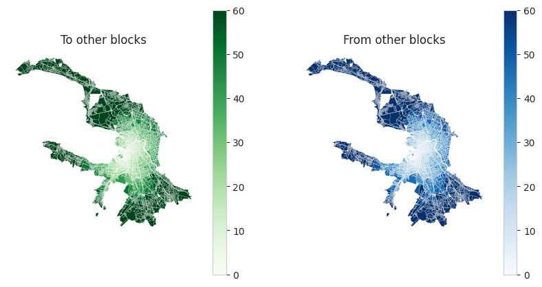

Accessibility
[1]:
from blocksnet import City, Accessibility
city = City.from_pickle('../data/model.pickle')
[2]:
accessibility = Accessibility(city_model=city)
block = city[123]
result = accessibility.calculate(block)
[3]:
result.head()
[3]:
| geometry | accessibility_to | accessibility_from | |
|---|---|---|---|
| id | |||
| 0 | POLYGON ((354918.622 6625258.829, 354901.464 6... | 55.2 | 55.6 |
| 1 | POLYGON ((355412.142 6623378.149, 355411.700 6... | 59.1 | 58.7 |
| 2 | POLYGON ((353934.329 6625429.433, 353923.453 6... | 51.3 | 51.7 |
| 3 | POLYGON ((355099.099 6623847.765, 355074.808 6... | 57.0 | 58.1 |
| 4 | POLYGON ((352766.168 6621954.748, 352744.412 6... | 61.1 | 58.9 |
[4]:
Accessibility.plot(result, figsize=(10,5))
